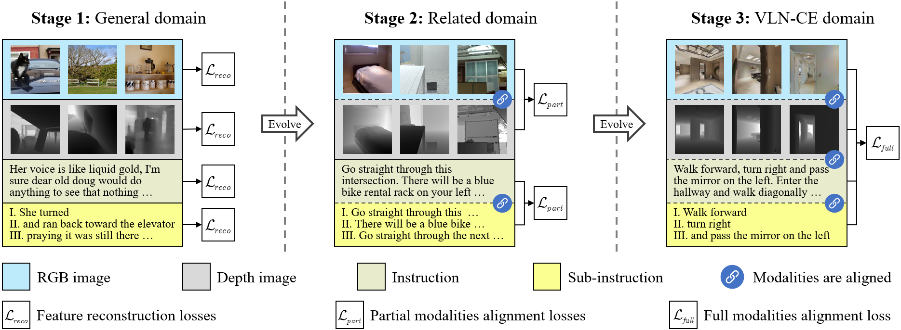

Method

Overall procedure.

The evolutionary pre-training procedure and dataset.

Can multimodal encoder evolve when facing increasingly tough circumstances? Our work investigates this possibility in the context of continuous vision-language navigation (continuous VLN), which aims to navigate robots under linguistic supervision and visual feedback. We propose a multimodal evolutionary encoder (MEE) comprising a unified multimodal encoder architecture and an evolutionary pre-training strategy. The unified multimodal encoder unifies rich modalities, including depth and sub-instruction, to enhance the solid understanding of environments and tasks. It also effectively utilizes monocular observation, reducing the reliance on panoramic vision. The evolutionary pre-training strategy exposes the encoder to increasingly unfamiliar data domains and difficult objectives. The multi-stage adaption helps the encoder establish robust inner- and inter-modality connections and improve its generalization to unfamiliar environments. To achieve such evolution, we collect a large-scale multi-stage dataset with specialized objectives, addressing the absence of suitable continuous VLN pre-training. Evaluation on VLN-CE demonstrates the superiority of MEE over other direct action-predicting methods. Furthermore, we deploy MEE in real scenes using self-developed service robots, showcasing its effectiveness and potential for real-world applications.